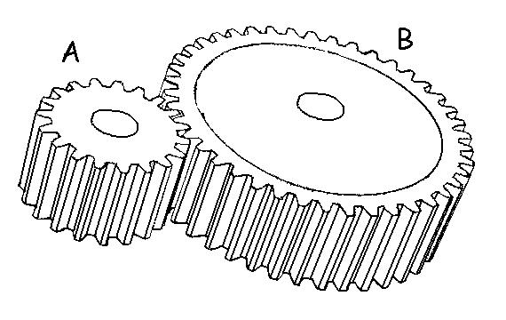
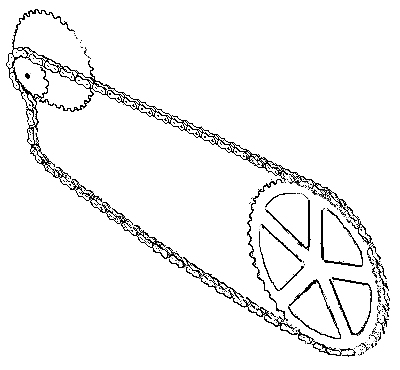
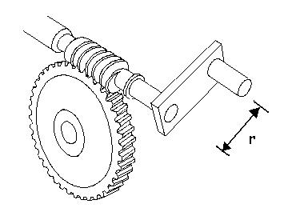

Gears
Gears are similar to pulleys when a chain is passed over them (i.e. bicycle) but they can also be connected directly. Since the teeth or cogs of the gears must mesh with the same chain or with each other, the teeth must be the same size which means that the number of teeth in the gear is directly related to the radius of the circle and to the moment arm through which the force acts.

Since the diameter of the gear is directly proportional to the number of teeth, the ratio of the teeth is directly proportional to the force advantage and speed disadvantage. Speed and force advantages are inversely related just like levers and pulleys. It is easier to rotate gear "A" because the resistance has a small moment arm. However, gear "B" will rotate more slowly. Multi-gear bicycles are excellent examples of this.
In the diagram to the right, the gear attached to the pedals has 42 teeth and the smallest gear attached to the wheel has 14 teeth. For every rotation of the pedals, there are three rotations of the wheel (42/14 = 3) which is a speed advantage but a force disadvantage. We can see the force disadvantage because the moment arm of the small gear at the wheel is 1/3 the moment arm of the large gear at the pedals. The circumference of the gear is proportional to the radius (2 x π x radius) so the number of teeth is proportional to the moment arm (radius of the gear). As we pedal, our effort produces a moment of force on the pedals which puts tension in the chain. The tension is the same force on the small gear at the wheel but the moment is three times smaller because the moment arm is three times smaller.
If we were to change the gear at the wheel to be the larger gear with 21 teeth, the tension in the chain would remain the same but the moment arm would increase which would allow a greater moment of force to be applied to the wheel. The speed advantage would be reduced to 2 (42/21 = 2) but the force disadvantage would also be reduced. This would allow the cyclist to ride up a steep hill but at a lower velocity.
Another strategy to help climb a hill would be to reduce the size of the gear at the pedals. If we were to change from a 42 tooth gear at the pedals to a 28 tooth gear, we would increase the tension in the chain because the moment of force we apply to the pedals stays the same but the moment arm of the gear is half which means the force must double. For each revolution of the 28 tooth gear at the pedals, the 14 tooth gear at the wheel will rotate twice so the speed advantage would be reduced to 2 from 3.
A very large force advantage is gained by using a worm gear. In the example below, turning the handle through one revolution causes the worm gear to rotate the lower gear by only a single cog. Since the lower gear has 42 teeth, you must rotate the handle 42 times to complete a single revolution of the lower gear. This is often used to slowly lift heavy objects such as the lifting of a car with a jack.
